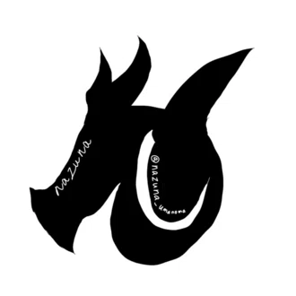

Roselia（BanG Dream!）
Roseliaに脳を焼かれている（現在進行形）
全曲好き。リサゆき狂人
次回参戦予定→Lehre der Rose DAY1,2
以下過去の現地参戦ライブ
- Sei stark
- アニサマ2025 ThanXX!
- Neuweltfahrt 東京 DAY1,2

Nazuna
凡人です。工学を学ぶ大学生（主にCとPythonを勉強中）
（だけどHTMLとCSSとJSわからな過ぎてCopilotにこのページを書かせる）
オタクです。以下好きなものの羅列
Roseliaに脳を焼かれている（現在進行形）
全曲好き。リサゆき狂人
次回参戦予定→Lehre der Rose DAY1,2
以下過去の現地参戦ライブ
好きな馬→エフフォーリア、シンボリルドルフ、ドルチェモア、レッドラディエンス、リバティアイランドなど多数
好きなレース3選→2021天皇賞秋、2022天皇賞秋、2021ジャパンカップ
好きな声優（敬称略）
声優にハマったきっかけの人。演技と声と歌と本人の性格が好き。ラジオがめちゃおもろい。アーティストとしての曲も良いのでぜひ。
かっこいよくてかわいい芸人集団バンド。一度でいいからRoseliaのライブには行ってほしい。
かっこいい系がはまり役だと思います。アーティスト活動のときの歌声が好きすぎる。
少年ボイスをやらせたらこの人が現代トップクラスだと思ってる。
ラジオ「佐倉綾音論理×ロンリー」はぜひとも聴いてほしい。物事に対する考え方、言語化が素晴らしい人です。
懸命に演技をする姿に心を動かされます。「ウマ娘プリティーダービー新時代の扉」は名作。
次に来る声優は絶対この人です。予言します。
永遠の推し→シンボリルドルフ
好き→シンコウウインディ、ゴールドシチー、ヴィルシーナ、ジェンティルドンナ、ナリタトップロード、ラッキーライラック
ゆるーくプレイはしています
2025年にスタァライトされました。
西條クロディーヌが好き。真矢クロはいいぞ。
劇場版に脳を焼かれた。
ポケモン→ゲッコウガがイチオシ
モンスターハンター→4GとXXは少し触れた。シャガルマガラが好き
学園アイドルマスター→十王星南担当
NARUTO→人生の教科書
ハイキュー→生きていく姿勢の教科書
SLAM DUNK→人生を変えてくれた伝説のマンガ
東方Project→自分をオタクに変えた元凶
都市伝説解体センター→無事に怪異化したからみんなやれ